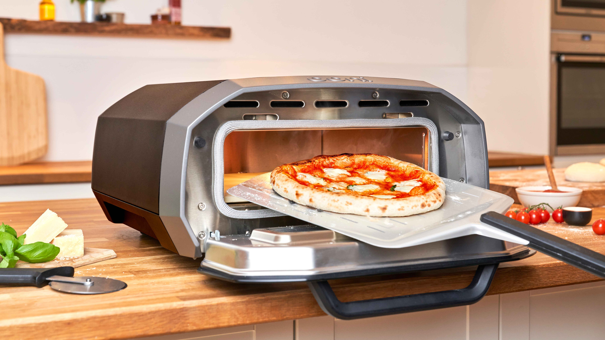
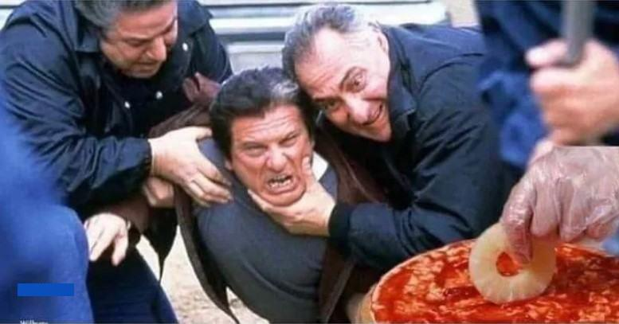

About PW2 and Screenshots
Below lies images related to history of pizza.
Please enjoy this image of wonderfully made dough as you brace yourself for the following images. All based on (mostly) true facts and images.

Shown below is one of the greatest tools ever invented. Yes, even better than the wheel. This allowed for the correct heating of pizza to allow for a crisp crust while also giving it a soft bread-like interior. Sadly however, no matter how pure the intentions were in the creation of this device, the fact remains that it is also the tool that enabled the creation of the first forbidden slice. While it may be impossible for some to forgive this machine for what is has cause, we must remeber the good times it has given to us, and allow our grivences to flow like tomato sauce. That is the only way to never let our enemies truly win.
Finally, this is a colorized picture of the tragedy that occured back in 1962. When a passing italian man saw a gang of nebraskian hooligans disgracing the name of pizza itself. He heroically attempted to stop the villinous group, but was overpowered by their hate for all things right in this world. As the picture shows the italian was forced to watch as they commited sacralidge upon this innocent slice. While unkown for sure, it is said the chef who cooked the origianl slice shown in the image dropped dead of heartbreak the moment pineapple touched his heartfelt creation.
